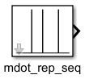
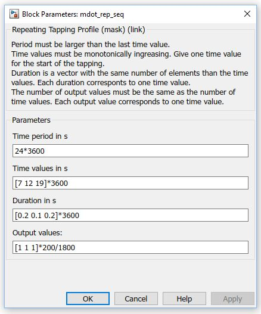

mdot_rep_seq
Path: CARNOT/Load/Hot_Water_Tapping
Purpose
Create a
massflow profile.
Description
The block creates a
massflow profile at the time events for a specified duration. The
block uses the Simulink pulse generator to assure that the simulation hits
correctly the beginning of the tapping.
Parameters and Dialog Box

Period must be larger than the
last time value.
Time values must be monotonically ingreasing.
Give one time value for the start of the tapping.
Duration is a vector with the same number of elements than the time values. Each
duration corresponts to one time value.
The number of output values must be the same as the number of time values. Each
output value corresponds to one time value.
Characteristics
Direct Feedthrough No
Sample
time
tapping events
Vectorized
No